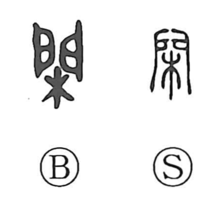

閑

Kun: hima, shizuka | On: kan
leisure ・ calm ・ quiet ・ to ward off ・ to prevent
Explanation
A compound graph of a gate (門) with a tree (木) set before it. The image evokes a tree placed in front of a doorway, forming a partition or screen—the boundary of a gate. From this concrete sense comes the idea of guarding or keeping something out, reflected in compounds like bokan (防閑). By extension, the character also came to stand, sometimes in place of 間, for a tranquil interval—free time, leisure, and calm—as seen in kanka (間暇, 閑暇).